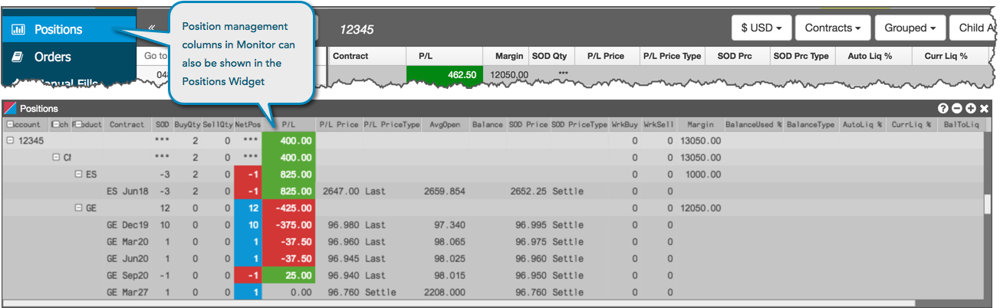
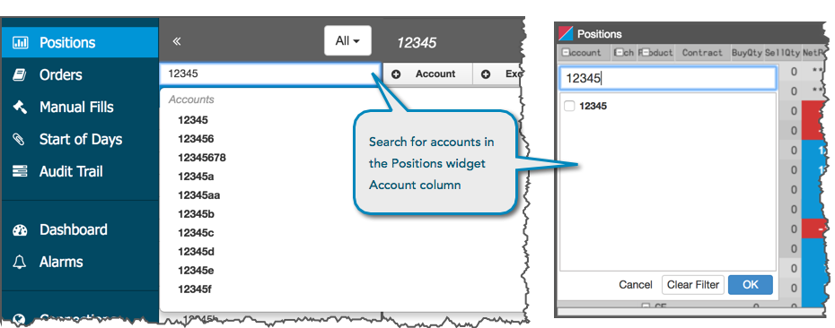
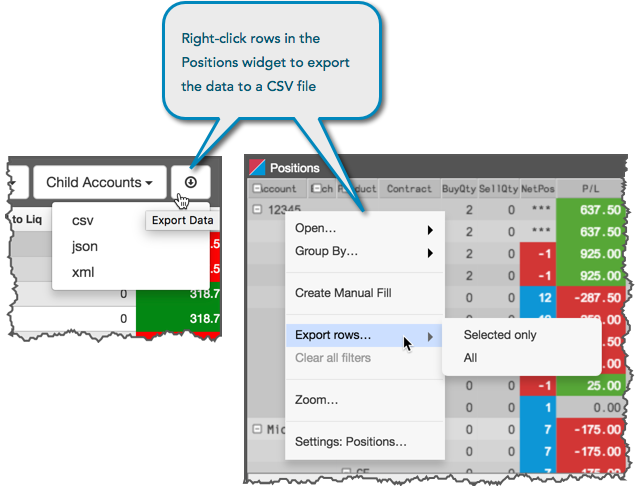
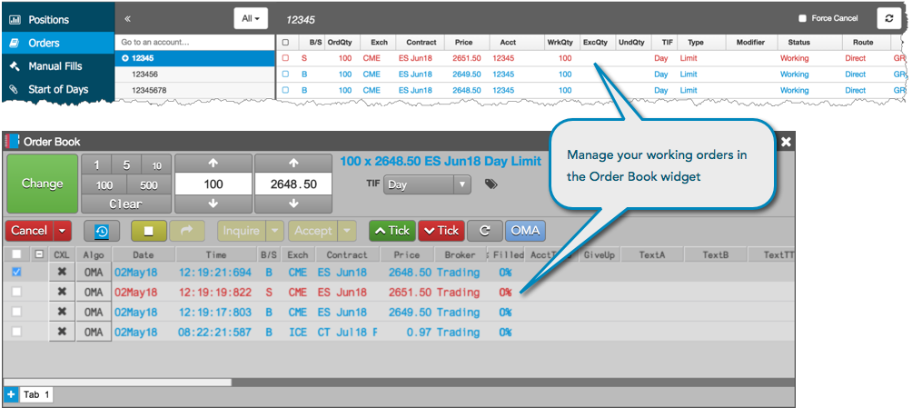
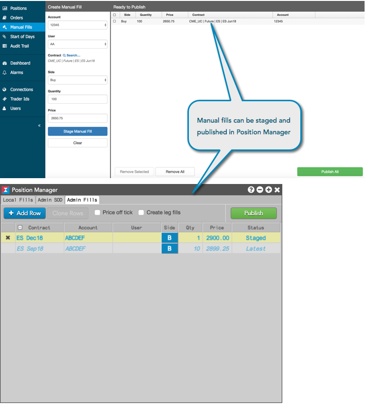
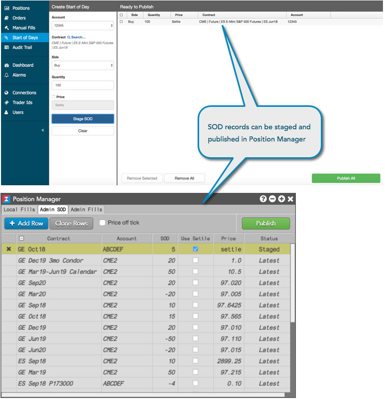
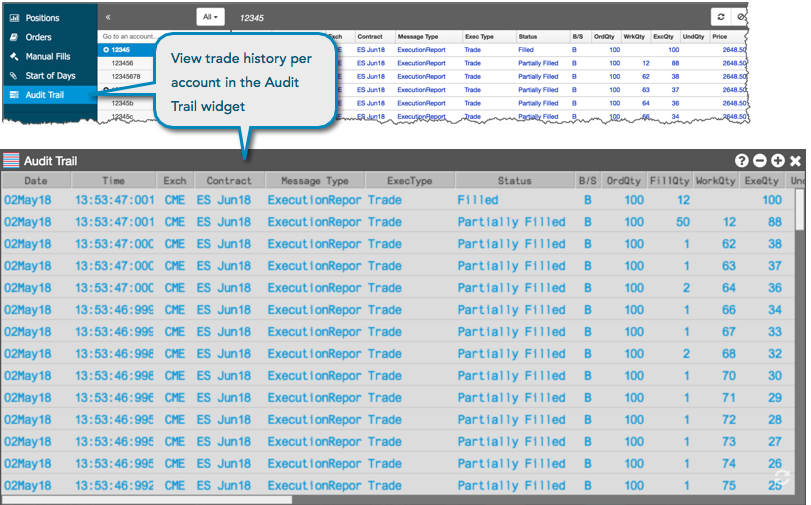

This guide directs you to the Trade widgets that deliver the same position management functionality and data that is available in Monitor.
Positions
The position management functionality available within the Positions tab of Monitor is available in the Positions widget.

Using the Position widget, you can:
Similar to the Account List in Monitor, you can click the Account column in the Positions widget to search for and select an account.

Using the Positions widget, you can also export data to a comma-separated values (CSV) file for all rows or selected rows in the Positions widget. Use Shift-click to select multiple rows. You can export either a grouped or flat view of positions in the widget.

Order Book
The Orders tab in Monitor provides you the ability to view or cancel working orders, as well as cancel stale orders. Trade provides these capabilities and more using the Order Book widget.

Using the Order Book widget, you can:
- Apply filters and sort your order book columns by account, contract, exchange and more.
- Customize the data displayed by choosing which columns you want to see and arranging the order in which the columns appear.
{% include ob-force-cancel.html %}
Position Manager
With the addition of the Position Manager widget, you have access to the manual fills and start-of-day (SOD) records capabilities available in Monitor from within TT's fully customizable workspace.
Manual Fills
Using Position Manager, you can create manual fills using essentially the same manual fills
functionality as Monitor.

{% include create-manual-fill.html %}
Start-of-Day records
You can also create and modify SODs using the Position Manager widget, which includes basically the same SOD functionality as Monitor.

{% include create-sod.html %}
Modifying an SOD
A Start of Day (SOD) record for an account can be modified manually on a per contract basis.
To modify an SOD:
- In the SOD row, click the following fields to modify as needed:
- SOD — Modify the SOD position.
- Use Settle — Select whether to use the current settlement price for the contract.
- Price — Enter a price for the SOD or use the default settlement price for the selected contract.

Note: You can also open Positions Manager by clicking
Modify SOD from the context menu when selecting a contract in the
Positions widget.
Tip: Click  to clear the modifications without saving as needed.
to clear the modifications without saving as needed.
- Review the SOD record and click Publish.
The new SOD position is displayed in the Positions widget.
Audit Trail
The Audit Trail widget provides more filtering options than Monitor. The "forever" Audit Trail in Trade gives you the ability to filter data by message and execution report types, as well as view historical data for the account used for trading.
